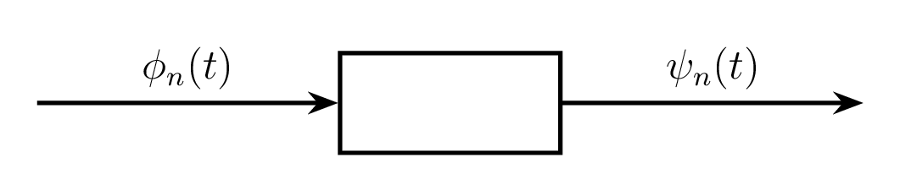
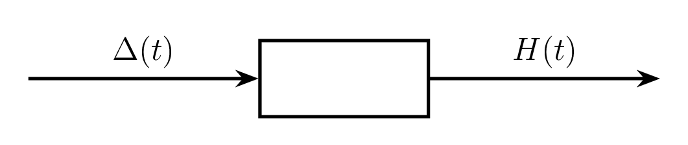
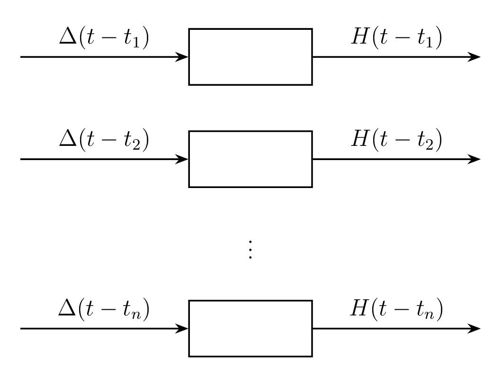
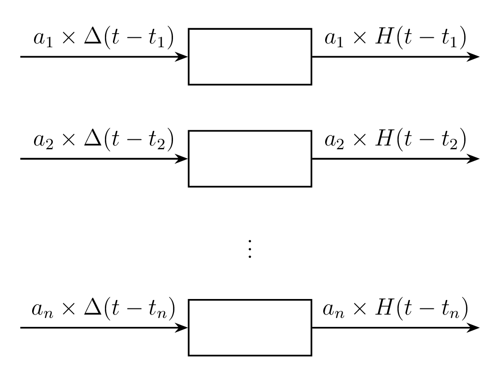

線形フィルタ
信号処理 - 第8講
前回のおさらい
Fourier 級数展開
定理
\(f\in L^{2}(-\pi,\pi)\) は 以下のように Fourier級数展開 される．
\begin{align} f(x) &=\sum_{n=-\infty}^{\infty}\langle f,\phi_{n}\rangle\phi_{n}(x)\\ &\phi_{n}(x)=\frac{1}{\sqrt{2\pi}}e^{inx},\;n=0,\pm1,\pm2,\dotsc \end{align}内積は \(f,g\in L^{2}(-\pi,\pi)\) に対して 以下で定義する．
\begin{equation} \langle f,g\rangle =\int_{-\pi}^{\pi}f(x)\overline{g(x)}dx \end{equation}
Fourier 変換と反転公式
定義
\(\mathbb{R}\) 上の関数 \(f\) に対して
\begin{align} \hat{f}(\omega) &=\frac{1}{\sqrt{2\pi}} \int_{-\infty}^{\infty}f(x)e^{-i\omega x}dx &\text{(Fourier変換)}\\ f(x) &=\frac{1}{\sqrt{2\pi}} \int_{-\infty}^{\infty}\hat{f}(\omega)e^{i\omega x}d\omega &\text{(逆Fourier変換)} \end{align}で定義する．
Parseval の定理
定理
関数 \(f,g\) は \(f,g \in L^{1}(\mathbb{R})\cap L^{2}(\mathbb{R})\) とする． このとき以下の関係が成り立つ．
\begin{equation} \int_{-\infty}^{\infty}f(x)\overline{g(x)}dx = \int_{-\infty}^{\infty}\hat{f}(\omega)\overline{\hat{g}(\omega)}d\omega \end{equation}\begin{equation} \langle f,g\rangle = \langle \hat{f},\hat{g}\rangle \end{equation}
Plancherel の定理
定理
関数 \(f\) は \(f \in L^{1}(\mathbb{R})\cap L^{2}(\mathbb{R})\) とする． このとき以下の関係が成り立つ．
\begin{equation} \int_{-\infty}^{\infty}|f(x)|^{2}dx = \int_{-\infty}^{\infty}|\hat{f}(\omega)|^{2}d\omega \end{equation}\begin{equation} \|f\|_{L^{2}} = \|\hat{f}\|_{L^{2}} \end{equation}
Riemann-Lebesgue の補題
定理
関数 \(f\in L^{1}(\mathbb{R})\) は滑らかで \(f'\in L^{1}(\mathbb{R})\) とする． このとき以下の性質をもつ．
\begin{equation} \lim_{|\omega|\to\infty}\hat{f}(\omega)=0 \end{equation}
演算との関係
| 関数 | Fourier変換 |
|---|---|
| \(f'(x)\) (微分) | \(i\omega\hat{f}(\omega)\) |
| \(f^{(k)}(x)\) (k階微分) | \((i\omega)^{k}\hat{f}(\omega)\) |
| \(f*g(x)\) (畳み込み) | \(\sqrt{2\pi}\hat{f}(\omega)\hat{g}(\omega)\) |
| \(T_{a}f(x)=f(x-a)\) (移動) | \(e^{-ia\omega}\hat{f}(\omega)\) |
| \(D_{b}f(x)=f(bx)\) (拡大縮小) | \({1}/{b}\cdot\hat{f}\left({\omega}/{b}\right)\) |
演習
練習問題
関数
\begin{equation} f(x)=\frac{1}{x-ia}\;(a>0) \end{equation}の Fourier 変換を求めよ．
- Fourier 変換と逆 Fourier 変換の関係を利用
- 複素積分を利用 (Cauchy の積分定理・留数定理)
練習問題
以下の関数の Fourier 変換を求めよ．
\begin{equation} \frac{1}{x+ia}\;(a>0) \end{equation}\begin{equation} \frac{a}{x^{2}+a^{2}}\;(a>0) \end{equation}\begin{equation} \left(\frac{\sin(x)}{x}\right)^{2} \end{equation}
Fourier 変換の例
| 関数 | Fourier変換 |
|---|---|
| \(\Xi_{(-1,1)}(x),\;x\in\mathbb{R}\) | \(\sqrt{\frac{2}{\pi}}\frac{\sin\omega}{\omega}\) |
| \(e^{-ax^{2}},\;x\in\mathbb{R}\) | \(\frac{1}{\sqrt{2a}}e^{-\omega^{2}/4a}\) |
| \(\frac{1}{x-ia},\;x\in\mathbb{R},a>0\) | \(\sqrt{2\pi}ie^{a\omega}\Xi_{(-\infty,0)}(\omega)\) |
| \(\frac{1}{x+ia},\;x\in\mathbb{R},a>0\) | \(-\sqrt{2\pi}ie^{-a\omega}\Xi_{(0,\infty)}(\omega)\) |
| \(\frac{a}{x^{2}+a^{2}},\;x\in\mathbb{R},a>0\) | \(\sqrt{\frac{\pi}{2}}e^{-a\vert\omega\vert}\) |
線形時不変フィルタ
注意
- 以降，音声や音楽などの時系列信号を扱う
時間 \(t\) を明示的に表すために
\begin{equation} f(t),\,g(t),\,h(t) \end{equation}のように書く
フィルタ
定義
入力 \(f(t)\) を変換して出力 \(g(t)\) を生成する機構

フィルタの例
エレキギターのエフェクター (effects unit, pedal)
- 歪み : オーバードライブ / ディストーション / ファズ
- モジュレーション : コーラス / フランジャー / トレモロ
- 空間系 : リバーブ / ディレイ
- フィルタ : ワウ / ピッチシフター / ワーミー
- その他 : イコライザー / コンプレッサー / ノイズゲート
参考
https://www.watercoursestudio.com/a-primer-on-guitar-effects/
フィルタ
- 関数 \(f(t)\) を関数 \(g(t)\) に変換する
- 関数に作用する作用素(演算子)
- いろいろな機能が有り得る
- 以降では理論的に扱い易い性質を想定
線形性
定義
2つの入出力関係を考えたとき， 入力の線形結合がそのまま出力に反映される性質


線形フィルタ
- 線形性を持つフィルタ
入力の分解表現
入力信号 \(f(t)\) を基底関数 \(\phi_{n}(t)\) を用いて分解
\begin{equation} f(t)=\sum_{n}a_{n}\phi_{n}(t) \end{equation}- フィルタによる基底関数の変換

出力の分解表現
出力信号 \(g(t)\) は変換された基底関数 \(\psi_{n}(t)\) の合成
\begin{equation} g(t)=\sum_{n}a_{n}\psi_{n}(t) \end{equation}- 入出力の基底の変換にだけ着目すれば十分
非線形フィルタ
- 信号の変換において非線形作用を持つフィルタ
- 多くのフィルタは線形性を持っている
線形でない例 (エフェクタ)
- ディストーション
- オーバードライブ
入力信号の振幅の大きさによって歪みが生じる
- 非線形フィルタでは出力から入力を再現することが難しい
時不変性
定義
入力の時刻が \(s\) ずれた場合，出力も \(s\) だけずれる性質
- 時間が経過してもフィルタの性質は変わらない

フィルタの数学的表現
信号の近似
信号 \(f(t)\) の階段関数近似
\begin{equation} f_{\tau}(t)=\sum_{n} a_{n}\Delta(t{-}t_{n}) \end{equation}階段関数の基底
\(\Delta(t)\) は 区間 \((0,\tau)\) で高さ1となる単一の矩形波で， 時間 \(t_{n}=n\tau\) だけシフトした矩形波の集合
\begin{equation} \Delta(t{-}t_{n})=\Delta(t{-}n\tau),\quad (n\text{ は整数}) \end{equation}
矩形波(基底関数)の変換
矩形波 \(\Delta(t)\) はフィルタによって \(H(t)\) に変換される．

時不変性
矩形波 \(\Delta\) を平行移動したものは フィルタの時不変性により \(H\) を平行移動したものとなる．

線形性
フィルタの線形性から入力を定数倍すると 出力も定数倍される．

階段関数の変換
階段関数
\begin{equation} f_{\tau}(t)=\sum_{n}a_{n}\Delta(t{-}t_{n}) \end{equation}はフィルタにより \(H\) の線形和である
\begin{equation} g_{\tau}(t)=\sum_{n}a_{n}H(t{-}t_{n}) \end{equation}に変換される．
積分による表現
階段関数の係数
信号 \(f(t)\) の階段関数近似の係数は \(a_{n}=f(t_{n})=f(n\tau)\) とすれば良い．
\begin{align} f_{\tau}(t)&=\sum_{n}f(t_{n})\Delta(t{-}t_{n}) =\sum_{n}f(n\tau)\Delta(t{-}n\tau)\\ g_{\tau}(t)&=\sum_{n}f(t_{n})H(t{-}t_{n}) =\sum_{n}f(n\tau)H(t{-}n\tau) \end{align}
矩形波の極限
関数 \(\Delta(t)\) は 区間 \((0,\tau)\) で高さ1となる単一の矩形波なので， 極限は以下のようになる．
\begin{equation} \delta_{\tau}(t)=\Delta(t)/\tau \xrightarrow{\tau\to0}\delta(t)\;(\text{デルタ関数}) \end{equation}
階段関数の極限
\begin{align} f_{\tau}(t) &=\sum_{n}f(n\tau)\Delta(t{-}n\tau)/\tau\cdot\tau \xrightarrow{\tau\to0}\int f(s)\delta(t{-}s)ds\\ g_{\tau}(t) &=\sum_{n}f(n\tau)H(t{-}n\tau)/\tau\cdot\tau \xrightarrow{\tau\to0}\int f(s)h(t{-}s)ds \end{align}\begin{equation} H(t)/\tau \xrightarrow{\tau\to0}h(t) \end{equation}- \(n\tau=s\) とおいて区分求積法の原理を用いればよい
フィルタの積分表現
\begin{align} f(t)&=\int f(s)\delta(t{-}s)ds\\ g(t)&=\int f(s)h(t{-}s)ds \end{align}
インパルス応答
変換された信号の表現(畳み込み積分)
\begin{equation} g(t)=\int_{-\infty}^{\infty}f(s)h(t-s)ds \end{equation}入力の表現
\begin{equation} f(t)=\int_{-\infty}^{\infty}f(s)\delta(t-s)ds \end{equation}- \(f(s)\) は時刻 \(s\) のインパルス \(\delta(t-s)\) の高さ
フィルタの表現
\begin{equation} h(t) =\int_{-\infty}^{\infty}\delta(s)h(t-s)ds =\int_{-\infty}^{\infty}h(s)\delta(t-s)ds \end{equation}- \(h(t)\) はフィルタに \(\delta(t)\) を入力した時の出力でもある
- \(h(t)\) をフィルタの インパルス応答 という
因果的フィルタ
音響信号などのフィルタのインパルス応答
\begin{equation} h(t)=0\;(t<0) \end{equation}- 時刻0にインパルスが入力される前には何も出力がされない
- 時間を遡ることがないという意味で 因果的 という
因果的フィルタの畳み込み
\begin{equation} h(t-s)=0\;(t < s) \end{equation}時刻 \(t\) での出力は 時刻 \(t\) 以前での入力のみにより定まる
\begin{equation} g(t)=\int_{-\infty}^{t}f(s)h(t-s)ds \end{equation}
非因果的フィルタ
- 理想的なローパスフィルタ
(物理的な回路では作成することができない) - 画像処理に用いられるフィルタ
(画素の上下左右に因果律があるわけではない) - オフラインの信号処理
(時間遅れを許容するデジタル信号処理)
演習
練習問題
線形時不変フィルタの機能は インパルス応答の畳み込み積分として表される．
\begin{equation} g(t) =\int_{-\infty}^{\infty}h(t-s)f(s)ds = h{*}f(t) \end{equation}この関係を Fourier 変換を用いて表せ．
今回のまとめ
- 線形時不変フィルタ
- 線形性
- 時不変性
- 因果的フィルタ
- フィルタの数学的表現
- 階段関数近似
- 重ね合わせの原理
- 畳み込み積分
- インパルス応答